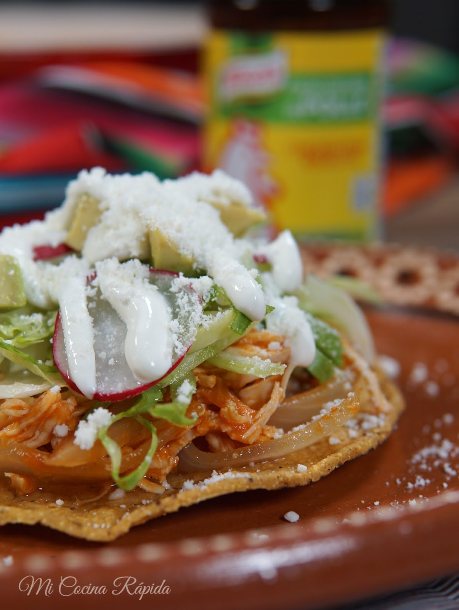

Chicken Tinga Tostadas

Description
Another delicious mexican dish that's super easy to make and doesn't take long to make at all!
Made with some chipotle sauce to add a little heat to the chicken as well as extra flavor. It's
traditionally topped with just some crema and some shredded queso blanco, but feel free to add
more toppings. Can't really make a bad decision! I'll be adding some shredded lettuce and
avocado to mine, but you're not limited to just what I put here. Feel free to experminent.
Now we'll get into the ingredients list.
Ingredients
- Rotisserie chicken or four chicken breasts
- tostadas
- 7 roma tomatoes
- half a white onion
- 7 oz can of chipotle in adobo sauce
- chicken bouillon
- shredded lettuce
- block of queso blanco
- crema
- OPTIONAL: avocado
With our ingredients, we're now ready to start!
Cooking Instructions
- We'll start with the tomatoes and onion. Dice 3 tomatoes and half of the onion.
- Chop the remaining 4 tomatoes in half and throw them into the blender along with
the can of chipotle with adobo sauce. Add 3 tablespoons of chicken boillon and a
half cup of water.
- Prep the rotisserie chicken. Pull all the chicken off the bones. You should end up
with some shredder chicken. If you'd prefer to cook your own chicken breasts &
shred that instead, that's fine too. Either way works.
- Once those are ready, take a large pot and throw in the diced onions. Cook them
until they're slightly brown. Don't cook them all the way through! Throw in the
tomatoes and chicken.